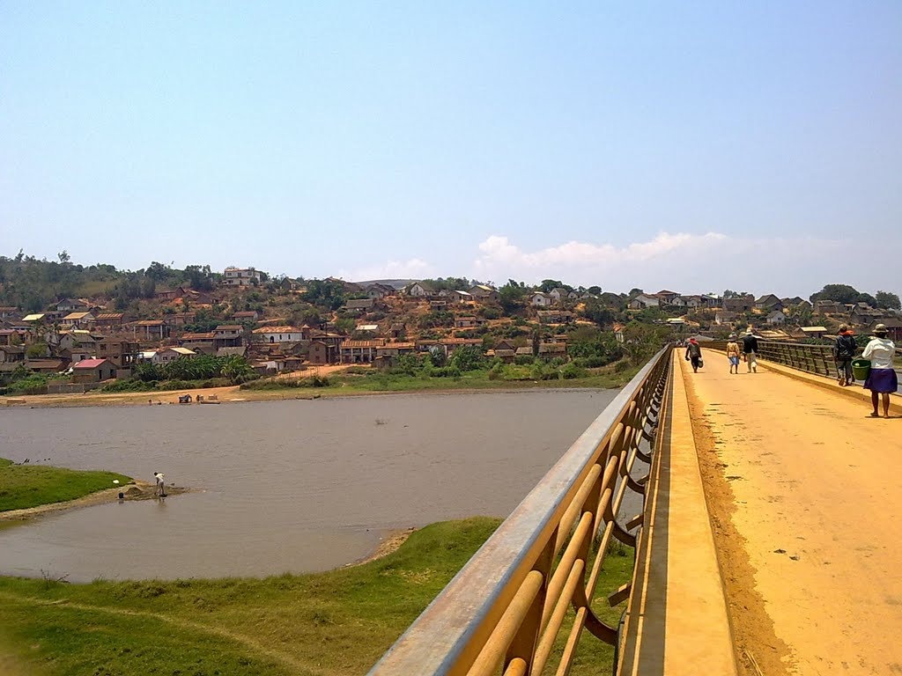

Introduction
My name is Synthia.I was born in Andromba which is a town and commune(Malagasy: kaominina) in Madagascar. It belongs to the district of Ambatondrazaka, which is a part of Alaotra-Mangoro Region I am really interesting in music and also I really love to sing.My parents still alive with my two youngers sisters who call Holly and Romence.I had lift in Andromba durring twenty yaers ago but now a day I am living in Mahanoro because of my study.
My town
My first tremester in high school
I learnt in high school Imerimandroso which is a town and commune (Malagasy: kaominina) in Madagascar .It belongs to the district of Ambatondrazaka, which is a part of Alaotra-Mangoro Region. Imerimandroso is 7 kilometers from my village. I really loved this high school because I got good knowledge from it.
In 2013 I started to study in this school.In my first trimester I was not felt comfortable because this my fisrt time to not live with my parents.I went home every weekend and I returned on monday morning.It was so hard for me because I had to go by foot . and I had to learn how can I manage my time and every day think about what kind of laoka(The laoka is one of two essential elements of Malagasy cuisine , with rice . This word refers to savorsy dishes that accompany the rice at every meal, like fish , meat zebu , the poultry , the cat meat has and many others.)should I buy.I felt really struggling during that time.
After the first trimestry, I really enjoyed to stay in Imerimandroso .I got new friend who helped me for my study so I was really happy and I had learnt many things so it was good to live alone.
High school in Imerimandroso